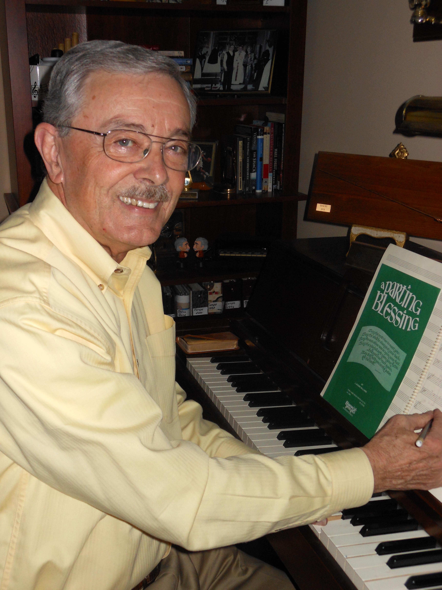

Biography
J. Jerome (Jim) Williams

Jim Williams is a native of Morganton, N. C. where his high school band director was noted NC composer, M. Thomas Cousins. Jim studied music at Mars Hill College (AA), East Carolina,
and Appalachian State University (BS, MA). He was band and choral director at Hildebran High School (NC), Cultural Arts Coordinator for the Burke Co. Public Schools, and was director
of the highly successful choral program at East Burke High School. During his time at East Burke High choral groups received seventy-two SUPERIOR ratings. He retired in 1994 after 32
years in the county school system. Following his retirement he taught at Mars Hill College and continues to work with the Choral Festival there.
Jim was selected as the 1982-83 NC Teacher of the Year and spent the year traveling the state promoting public education. He received the Lara Hoggard Award from the NC-ACDA in 1991 for
Excellence in Choral Music in North Carolina. In 2013 he was inducted into the NC High School Choral Hall of Fame by the choral section of the North Carolina Music Educators Association.
He is a member of numerous professional organizations and continues to be active in choral music as a guest conductor and in assisting groups and directors on a request basis.
Jim has directed the Morganton (NC) Combined Choirs Christmas program sixteen times and organized the Foothills Festival Singers in 2012.
Jim has over 45 years experience as a church choir director. In 2007, he retired from First United Methodist Church in Hickory after 31 years of service. The church awarded him the title
Chancel Choir Director Emeritus.
Of his published compositions, A Parting Blessing has been the most successful with more than 200,000 copies sold. In 2009 it was performed at Carnegie Hall by a choir of app. 700 voices
as part of the 70th Anniversary Gala of Shawnee Press. The piece is designated a Shawnee Classic.
Jim also represents Witte Travel of Grand Rapids, MI, in arranging European concert and sightseeing tours for church, school, college, and community groups. He and his wife, Susan, live in
Valdese, NC.
© 2015 J. Jerome Williams, Valdese, NC